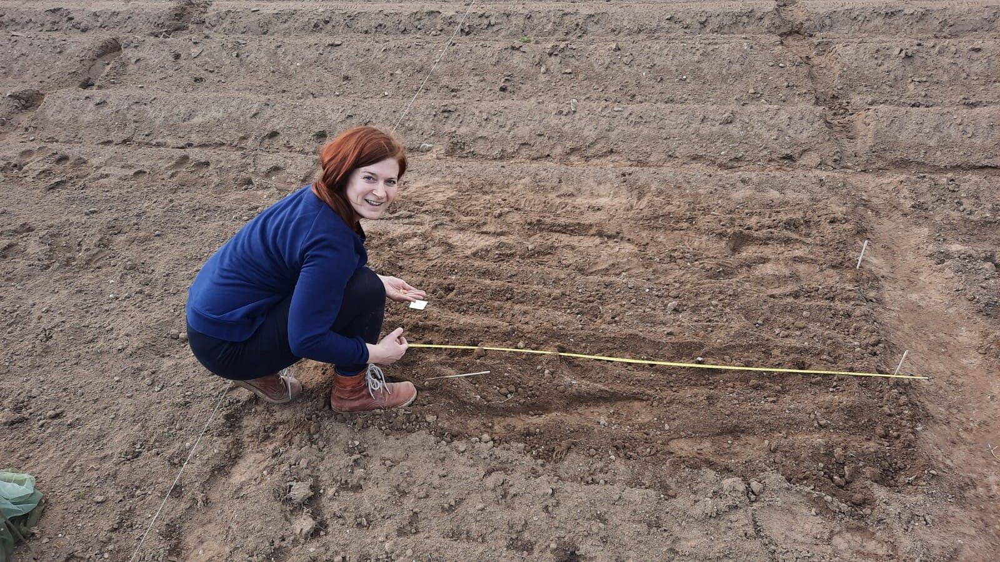
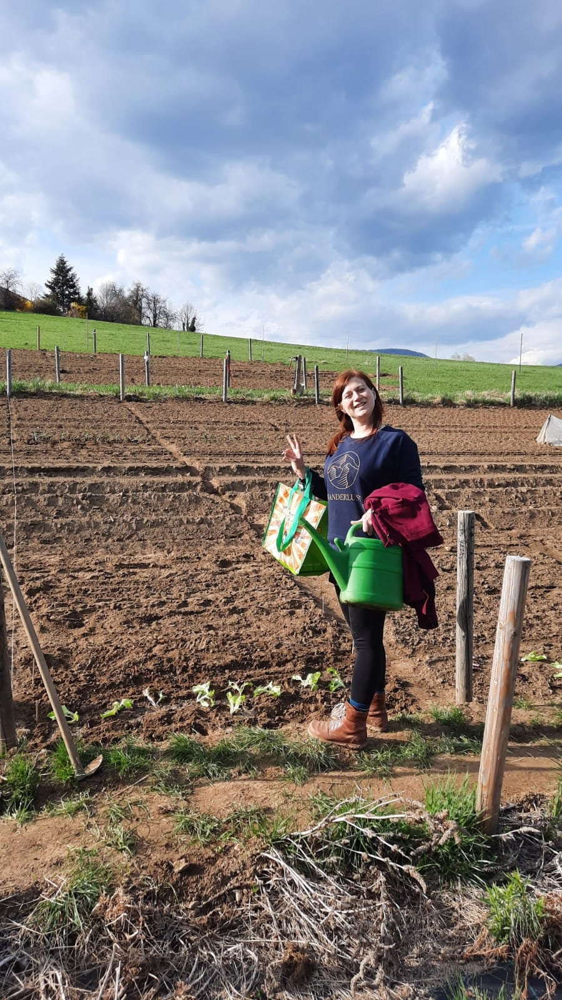
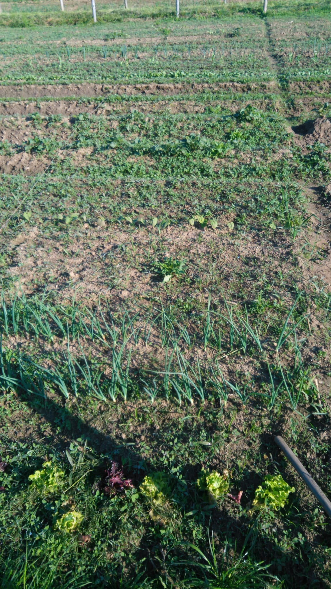
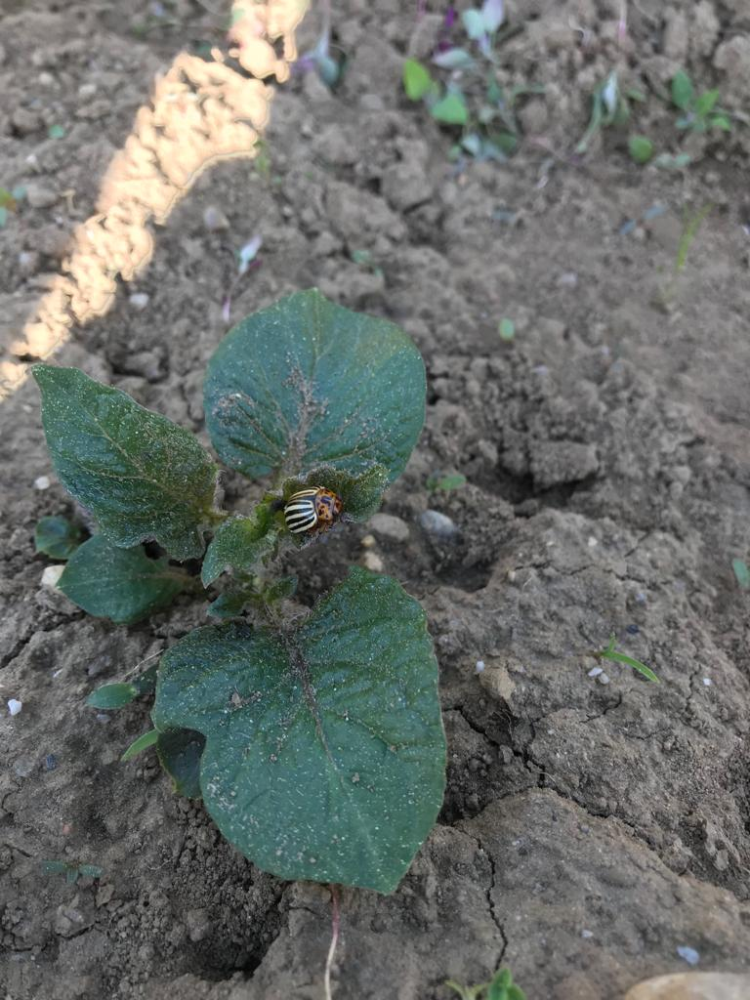
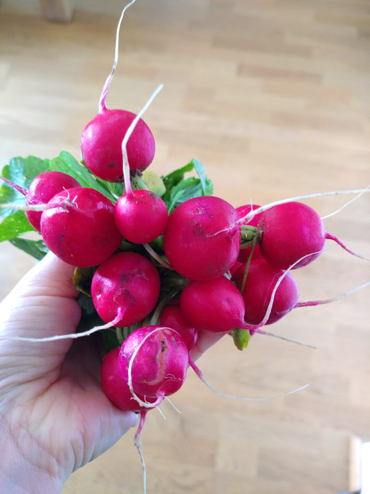
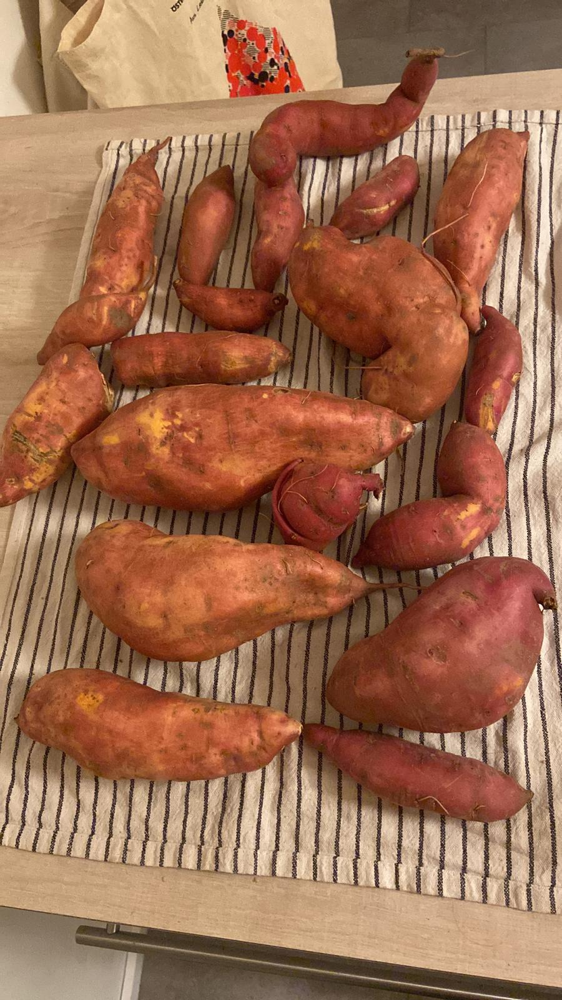
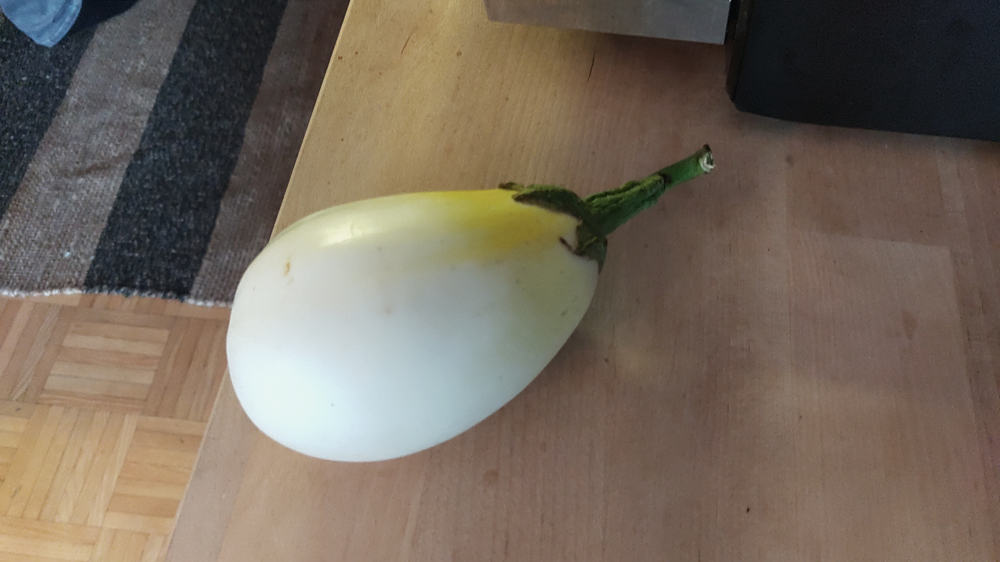

Fotostrecke
Das Gemüse wächst auf einem Bio-Acker. Auf dem Acker bestehen viele Parzellen, die von unterschiedlichen Personen gepachtet werden. Jeder erhält Gemüsepflanzen und Samen und ist im Anschluss für die Pflege selbst verantwortlich.
HIER BILDER einfügen
Beginn der Gartensaison
Als erster Schritt muss das Beet angelegt werden. Es wurde mit Maschinen vorbereitet und einige maschinell ansäbare Pflanzen wurden bereits für alle Parzellen gesät und die restliche Fläche gut vorbereitet. Am selben Tag werden die ersten Samen gesät und die ersten Jungplanzen gesetzt.
Die Parzellen am Acker sind mit Nummern markiert
Sind die Pflanzen gesetzt, werden sie zuerst gut angegossen

Um die Pflanzen vor Frost zu schützen, werden sie mit einem Vlies bedeckt.

Um eine reiche Ernte zu bekommen, muss man die Pflanzen gut Pflegen. Beipflanzen müssen entfernt werden, damit sie für die Gemüsepflanzen keine Konkurrenz sind. Diese Beikräuter werden möglichst an einem heißen Tag frühmorgens mit der Wurzel aus der Erde gezogen. Man lässt sie vor Ort liegen und durch die Sonne werden die Wurzeln ausgetrocknet. Somit wird ein neuerliches Anwachsen ausgeschlossen. Der Boden wird regelmäßig gelockert, damit Regenwasser gut in den Boden eindringen kann. Die Philosophie am Acker ist, so wenig wie möglich zu gießen. Nur am Beginn nach der Pflanzung und wenn bereits Früchte an der Pflanze sind und es sehr trocken ist sollen die Pfalnzen gegossen werden.
Auf den Beikrautaufwuchs muss regelmäßig geachtet werden.
Im Laufe der Saison kommen auch Schaderreger, denen die Pflanzen gut schmecken. Sehr hartnäckig sind zum Beispiel die Kartoffelkäfer, die das Laub der Kartoffelpflanzen verspeisen. Fressen sie zu viel vom Laub, kann die Pflanze weniger Photosynthese betreiben und die Kartoffelknollen bleiben klein. Die beste Strategie am Bio-Acker ist, sie abzuklauben.
Ist das Wetter im Verlauf der Saison gut und können die Pflanzen gut wachsen, gibt es reiche Ernte.


Weil sehr viel Gemüse zum selben Zeitpunkt reif wird, kann ich einerseits viel davon verschenken und den Rest verarbeite ich. Am liebsten koche ich es mit Essig ein oder auch Chutneyrezepte mag ich sehr gerne. Es gefällt mir, verschiedene Rezepte auszuprobieren und jedes mal beim Einkochen anders zu würzen.

Da die reiche Ernte sehr viele Gläser eingekochtes Gemüse ergeben, habe ich gleich viele Mitbringsel und Weihnachtsgeschenke. Davor wird natürlich alles verkostet und wir lassen uns Namen für die unterschiedlichen Kreationen einfallen.

Über den Winter wird das Gemüse verspeist und dann freuen wir uns schon wieder auf die nächste Gemüsegartensaison und frisches Gemüse.